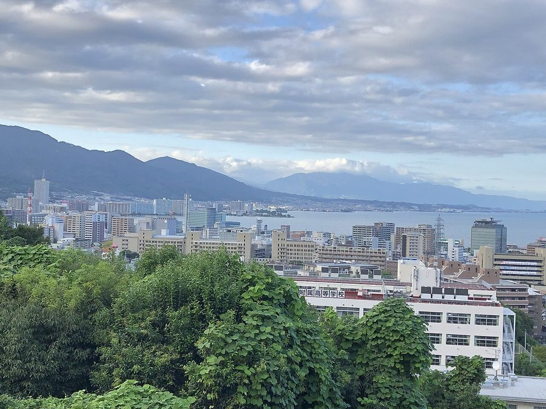
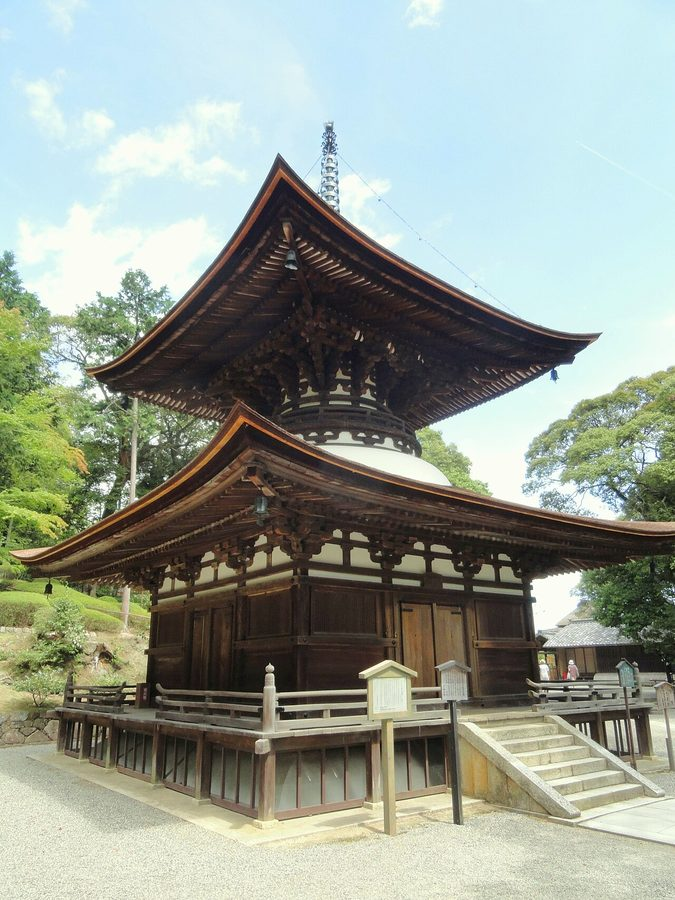
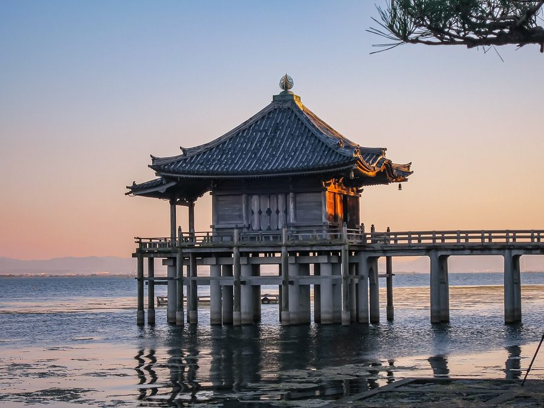
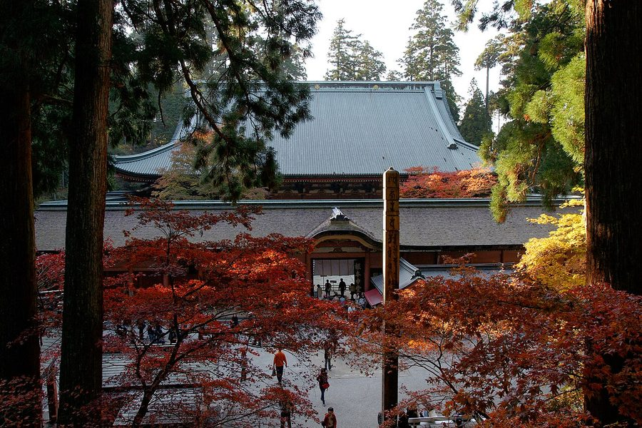

滋賀県大津市の日帰り温泉・銭湯・サウナ（24件）
寄り道スポット検索アプリ「ヨッテコ」の収録データから、滋賀県大津市の日帰り温泉・銭湯・サウナを営業時間・料金つきで一覧にしました（2026年8月時点）。
最も安いのはゆとなみ社 容輝湯（490円）。最も遅くまで入れるのは大津温泉 おふろcafé びわこ座（翌1:00まで）。朝風呂ならゆとなみ社 容輝湯（8:00開店）。
滋賀県大津市はどんなまち？
数字で見る🔍滋賀県大津市
まちの横顔




- 地形と気候: 市域の多くは近江盆地に位置し、全般的に内陸性気候です。旧堅田町区域は豪雪地帯に指定されています。琵琶湖のほか、武奈ヶ岳など1000メートル級の山々が連なる比良山地、世界遺産の延暦寺がある比叡山、琵琶湖から流出する唯一の川である瀬田川など、湖と山に囲まれた地形が広がります。
- 観光: 天智天皇が近江大津宮に遷都して以来、1350年以上の歴史を有する古都です。世界文化遺産の延暦寺、園城寺（三井寺）、日吉大社、石山寺などの古社寺をはじめ、多くの文化財や史跡、名勝が現存します。市町村単位での国指定文化財保有件数は、京都市、奈良市に次いで全国で3番目に多いとされています。日本三名橋の一つ瀬田の唐橋や、かるたの聖地として知られる近江神宮も所在します。
- レジャーと産業: 夏はウォータースポーツやトレッキング、冬はスキーなどのアウトドアが盛んなまちです。東レ創業の地でもあり、現在も主要な研究開発拠点および生産拠点となっています。
寄り道充実度（全国偏差値）
偏差値・順位は、ヨッテコ収録データ（2026年8月時点・26,033件）を市区町村別に集計した施設数の全国分布（1,728市区町村）から毎回算出しています。カードを押すとカテゴリ別の分析に切り替わります。
日帰り温泉から見た滋賀県大津市
サウナがある店は79%、全国水準（52%）の1.5倍。——件数ではなく、中身に特徴が出るまち。
- 露天風呂がある店は29%で、全国水準（46%）を下回ります。外の眺めより、湯そのものに向き合う造りが多いということになります。
- 天然温泉の店は38%。全国水準（67%）より少なめの構成です。銭湯やスーパー銭湯が寄り道先の中心、という構成でしょうか。
- サウナがある店は79%、全国水準（52%）の1.5倍。内陸性気候で、旧堅田町区域が豪雪地帯に指定された市。整えて帰るという寄り道の仕方が、79%という数字に出ています。
- 入浴料（判明17件）の中央値は1,650円。全国（650円）より154%高めです。延暦寺・園城寺・日吉大社・石山寺など世界文化遺産の古社寺が現存する市。設備や湯の質を含めた、この土地の相場ということになります。
出典: 施設データ=ヨッテコ収録データ（26,033件・2026年8月時点）。偏差値・全国順位・全国水準は全1,728市区町村の分布から毎回算出。 / 人口=総務省「住民基本台帳に基づく人口、人口動態及び世帯数」（2026年1月1日現在） / 面積=国土地理院「全国都道府県市区町村別面積調」（2026年4月1日時点） / 森林率=農林水産省「2025年農林業センサス（農山村地域調査）」市区町村別林野率（2025年、林野率（林野面積÷総土地面積）） / 年平均気温=気象庁「平年値（1991-2020年）」。市区町村の代表点（国土交通省「大字・町丁目レベル位置参照情報」）から最も近い観測点の値 / まちの解説=日本語版Wikipedia「大津市」（https://ja.wikipedia.org/wiki/大津市、2026年8月21日取得、CC BY-SA 4.0） / 写真=Wikimedia Commons（各キャプションに作者・ライセンスを記載）
曜日別の営業施設数
| 月 | 火 | 水 | 木 | 金 | 土 | 日 |
|---|---|---|---|---|---|---|
| 21 | 19 | 22 | 21 | 22 | 23 | 22 |
火曜日が最も休みが多く（各5件が定休）、年中無休は14件です。※営業時間データのある24件で集計
入浴料金の分布（大人）
| 500円以下 | 5件 | |
| 501〜800円 | 1件 | |
| 801〜1,200円 | 1件 | |
| 1,201円以上 | 10件 |
料金が確認できた17件で集計。
施設一覧
| 施設 | 営業時間 | 料金（大人） |
|---|---|---|
| 8Seas Sauna Hira エイトシーズサウナ比良 サウナ 滋賀県湖西部の比良に位置する本格フィンランドサウナ。自然豊かな山々に囲まれた森の中で、井戸水を使った人工水路の水風呂と露… | 10:00〜21:00（月休） | 2,200円 |
| ASOBIWA HIRA BASE サウナ 琵琶湖畔のアクティビティ施設。薪ストーブサウナストーンを使用したテントサウナで、スタッフが設営をサポートし、目の前の琵琶… | 10:00〜17:00（木休） | 2,750円 |
| CAMMA サウナ 大津市の里山に位置するカフェ・コワーキング・サウナの複合施設。フィンランド式サウナで外気浴可能なテラスから雑木林の里山風… | 10:30〜20:00（月・火・日休） | — |
| GREEN SAUNA サウナ | 19:30〜21:30 | 1,000円 |
| WANI BASE ワニベース サウナ サウナ 琵琶湖の雄大な水辺と静寂な森に囲まれたプライベートサウナ施設。4つのプラン（テントサウナ・ヨットサウナ・日帰りBBQサウ… | 10:00〜17:00（火・水休） | 3,500円 |
| everglades beach エバーグレイズビーチ サウナ 琵琶湖畔の近江舞子に位置するテントサウナ施設。琵琶湖を直接水風呂とし、薪ストーブで温めた本格的なテントサウナを体験。季節… | 10:00〜16:00 | — |
| private sauna MOTHER HAUS サウナ 大津市堅田の一棟貸切プライベートサウナ。琵琶湖の南東に位置し、自然に溶け込む静かな立地で、8時間のサウナ体験と相性抜群の… | 10:00〜18:00 | — |
| おごと温泉 暖灯館きくのや 天然温泉露天風呂 おごと温泉の歴史ある老舗温泉宿で、琵琶湖を一望できる露天風呂が特徴。1200年の歴史を持つ温泉地の中核施設です。 | 16:00〜20:00 | — |
| おごと温泉 湯元舘 天然温泉露天風呂サウナ 約1200年の歴史を持つおごと温泉の老舗宿。琵琶湖一望の露天風呂と、月替わりで男女交代する複数の浴場が自慢。 | 11:00〜21:30 | — |
| おふろcafe ニューびわこホテル 天然温泉 Hotel with natural hot spring and day-use bathing option at … | 11:00〜17:00 | 3,900円 |
| びわ湖花街道 天然温泉露天風呂 比叡山延暦寺の開祖・最澄が開いたと伝わるおごと温泉のホテル。琵琶湖を望む露天風呂付客室が自慢。 | 11:30〜20:00 ※曜日により異なる | 3,300円 |
| ゆとなみ社 容輝湯 1932年創業の銭湯。天然地下水を薪で沸かした柔らかいお湯が特徴。浴室の釉薬タイル絵が見どころで、昭和レトロな空間。 | 14:00〜24:00 ※曜日により異なる | 490円 |
| ゆーゆーらんど 大津湯 サウナ | 15:00〜25:00 | 490円 |
| スターハウス 森のサウナ サウナ 京都駅から約40分、琵琶湖を望む滋賀県大津市の完全貸切サウナ・BBQ施設。国産檜100%使用の高級サウナと本格バーベキュ… | 11:00〜17:00 | — |
| スパリゾート雄琴 あがりゃんせ 天然温泉露天風呂サウナ | 10:00〜24:00 | 1,650円 |
| 大津温泉 おふろcafé びわこ座 天然温泉露天風呂サウナ | 10:00〜25:00 | 1,568円 |
| 天然地下水 都湯（ZEZE） サウナ 大津市の銭湯。天然地下水を薪で沸かしたこだわりの水風呂が自慢。120℃の高温ドライサウナも特徴的。レトロな佇まい。 | 15:00〜24:00（木休） | 490円 |
| 天然温泉 比良とぴあ 天然温泉露天風呂サウナ 比良の自然が満喫できる露天風呂と充実した大浴場を備えた天然温泉施設。八雲乃湯と武奈乃湯の2つの露天風呂があります。 | 10:00〜21:00 | 620円 |
| 山宗-YAMASOU- サウナ 滋賀県大津市の琵琶湖畔に位置するテントサウナ。日本最大級の水風呂である琵琶湖を活かしたユニークな温冷交互浴体験が特徴。 | 10:00〜17:30 | 3,000円 |
| 比良招福温泉 ホリデーアフタヌーン 天然温泉 近江舞子・比良の源泉掛け流し温泉と近江牛が味わえる宿泊施設。家族風呂での雪見風呂も楽しめる。 | 10:00〜18:00（月休） | — |
| 神楽湯 サウナ | 16:30〜22:00 ※曜日により異なる | 490円 |
| 近江湯 サウナ | 15:30〜22:00（火休） | 490円 |
| 里湯昔話 雄山荘 天然温泉露天風呂サウナ 近江昔話をモチーフにした大浴場が自慢のおごと温泉の旅館。露天風呂から木立越しに琵琶湖を望める。 | 11:00〜14:30 | 2,200円 |
| 青木煮豆店 サウナ | 09:00〜18:00 | 4,000円 |